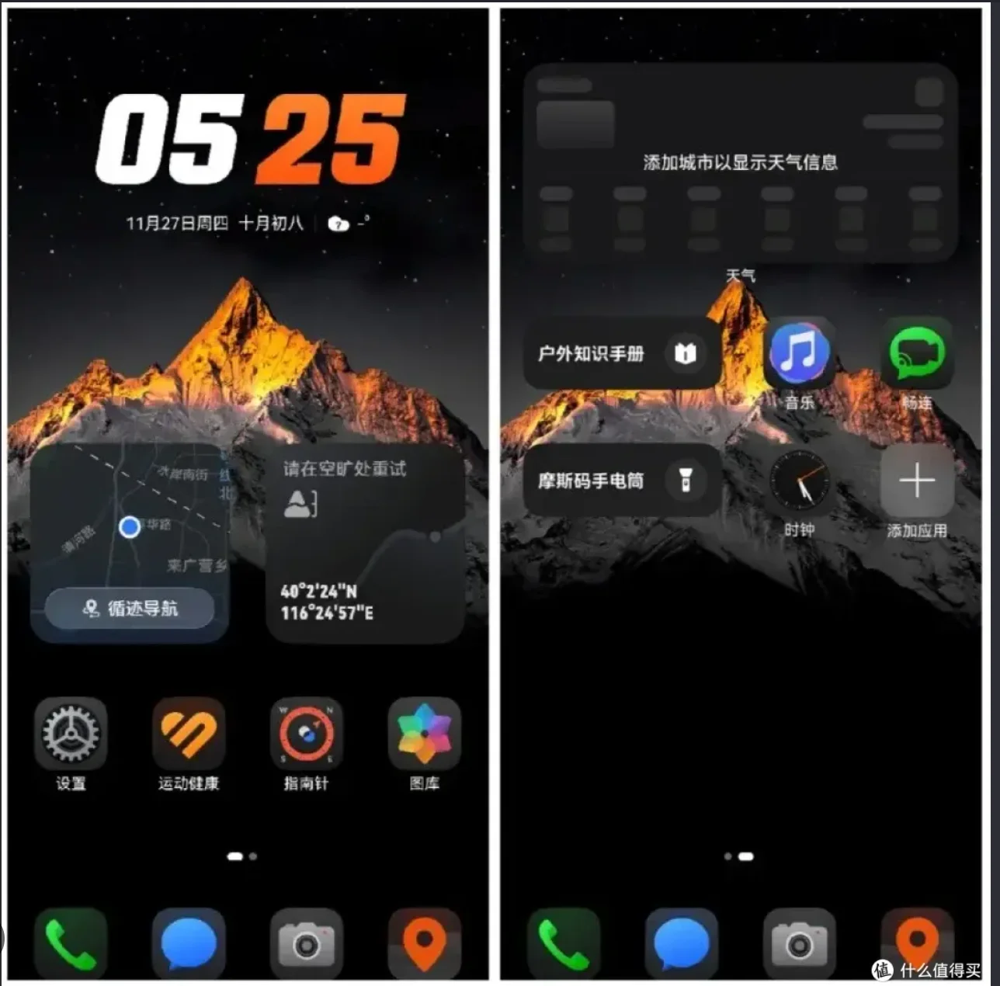
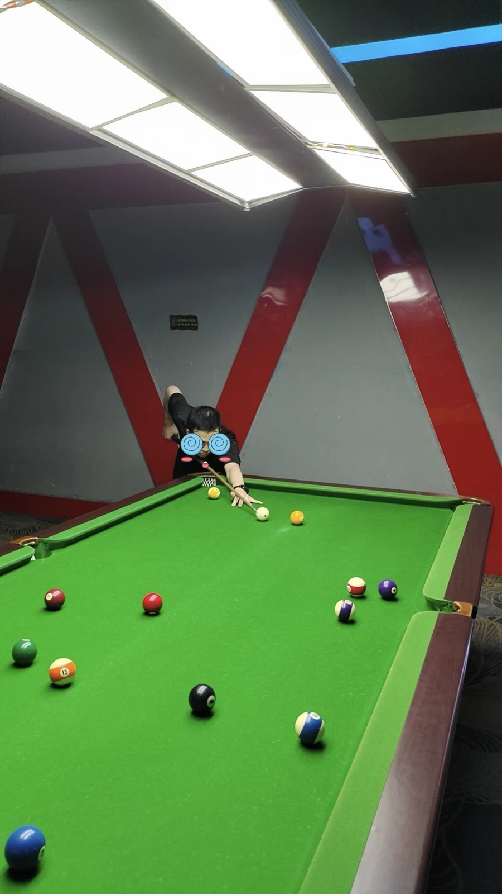

目前2026.10.15
— 至今
— 至今
蚂蚁
CodeFuse One · 应用开发
目前在 CodeFuse One 从事应用开发，参与相关产品与技术建设。
来自宁夏，在同济求学，
如今在杭州，开启新一段旅程。
我是周扬，花名珂鸣。目前在蚂蚁 CodeFuse One 从事应用开发。此前在华为的工作涉及旗舰手机的性能交付、软件新特性，以及企业网络管理智能体。我喜欢让想法落地，也享受在新领域里不断学习的过程。
从终端体验到智能体应用，
每一段经历都带来新的视角。
CodeFuse One · 应用开发
目前在 CodeFuse One 从事应用开发，参与相关产品与技术建设。
性能交付 & 软件新特性
围绕旗舰手机开展性能交付与软件新特性相关工作，涉及三折叠、大折叠、异形折叠与旗舰直板机等产品形态。
参与 Mate80 系列户外探索模式相关工作，个人开发其中的摩斯码手电筒功能。Pura X 则是我入职后参与的首款产品，也是印象很深的一段经历。
企业网络管理智能体
参与企业与校园网络管理智能体相关工作，探索 AI 智能体在网络管理场景中的应用。

所在团队从 0 到 1 完成了 Mate80 系列的户外探索模式。我负责开发其中的摩斯码手电筒功能，该功能曾在产品发布会上获得专页介绍。
户外探索模式是团队共同完成的产品特性，摩斯码手电筒是其中由我开发的功能。这里记录的是这段从开发到产品展示的经历。
电子与信息工程学院
2021.09 — 2024.06
2017.09 — 2021.06
从四平路到嘉定校区，同济留下的不只有课堂记忆。校园里的足球、运动和朋友，同样构成了我很珍惜的一段生活。
球桌旁、球场上，或在下一段旅途里，
都是另一个认识我的好地方。

01 / BILLIARDS从高中坚持至今，喜欢打中式八球，也喜欢看斯诺克比赛。
工作后最常打羽毛球，也曾是同济电院足球队的一员。桌游和电子游戏，同样是我的休息方式。
喜欢自驾和旅行，去过江浙沪周边、新疆、东北，也到过日本。下一段旅程，继续探索。
当下，继续熟悉 CodeFuse One 的业务与研发流程，
也继续探索杭州好吃、好玩、好逛的地方。